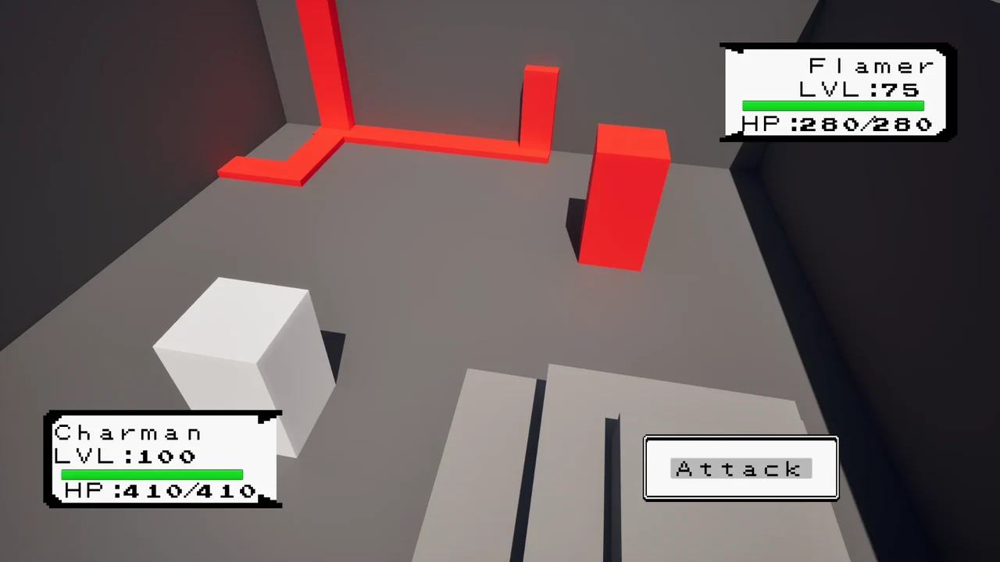
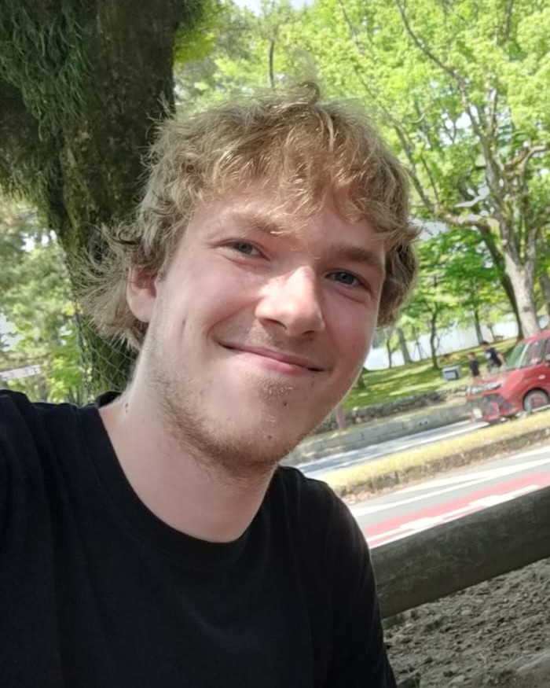

01
Projects

Systems design · Unreal Engine
A turn based combat tool
A solo project where I designed a turn-based combat plug-in. It was made with modularity in mind and gives users the freedom to change it to fit their exact needs.
Gameplay prototype
Project title 2
What you were exploring, the mechanic at its core, and what you learned making it.
02
About me

Programming came first: a high school programming class gave me the tools to bring the ideas in my head into the world. Recreating features from existing games taught me what it takes to make games, and led me to study game design at BUas.
Prototyping and new systems are what I keep coming back to: building prototypes and bringing ideas to life.
Toolkit
- Unreal Engine 5
- Blueprints
- Unity
- Miro
Focus areas
- Systems design
- Prototyping
Education
BUas — Creative Media & Game Technologies
Based in
Breda, Netherlands
03
Currently looking for
- RoleInternship
- FieldSystems design
- StartFall 2027